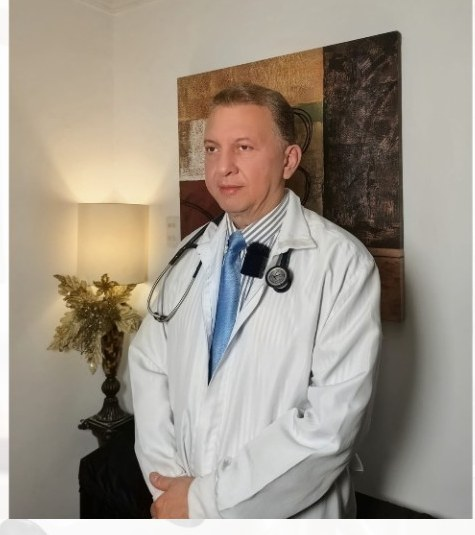

¿Dolor de espalda, cuello o ciática?
Manejo médico del dolor osteomuscular con evaluación médica y un enfoque biomecánico.
Dr. Gonzalo Ramírez Serpa, MD
Médico y Cirujano · Especialista en Medicina de Emergencia y Cuidado Crítico
Más de 30 años de experiencia

Motivos de consulta frecuentes
Atención orientada al diagnóstico y manejo de diferentes cuadros de dolor osteomuscular.
Espalda y lumbalgia
Dolor lumbar y molestias de espalda.
Ciática
Evaluación médica de dolor con irradiación.
Cuello y cabeza
Dolor cervical, cefalea y molestias relacionadas.
Dolor musculoesquelético
Manguito rotador, epicondilitis y otras afecciones.
Túnel carpiano
Valoración y orientación del manejo.
Migraña y neuralgias
Consulta médica según cada caso.
Fascitis plantar
Evaluación del dolor y factores biomecánicos.
Consulta médica
Consulta general y patologías de emergencia.
¿Cómo se aborda tu dolor?
La primera consulta comienza con una evaluación médica completa para orientar el diagnóstico y el plan de manejo.
Evaluación médica
Revisión de síntomas, antecedentes y condición general.
Orientación diagnóstica
Cuando corresponde, pueden considerarse RMN, ecografía, radiografías o laboratorio.
Enfoque biomecánico
Se valoran postura, movilidad y factores relacionados con el dolor.
Plan personalizado
Se seleccionan las alternativas terapéuticas según cada caso.
Un enfoque médico antes del tratamiento
El Dr. Gonzalo Ramírez Serpa es Médico y Cirujano, especialista en Medicina de Emergencia y Cuidado Crítico, con más de 30 años de experiencia.
En las consultas de dolor se realiza una valoración médica y un enfoque biomecánico para orientar las opciones de manejo de acuerdo con cada paciente.
Clinical Chiropractic
Enfoque quiropráctico realizado por médico cirujano, posterior a una evaluación y diagnóstico médico.
- ✓ Ajustes articulares
- ✓ Descompresión vertebral
- ✓ Activator
- ✓ Terapias físicas según el caso
- ✓ Terapias magnéticas y eléctricas
- ✓ Terapia de infiltraciones cuando está indicada
Consulta en Bocagrande
📍 Edificio Puerto Azul, Local 4
Carrera 1 No. 14-26
Bocagrande, Cartagena, Colombia
10:00 a. m. – 2:00 p. m.
Atención únicamente con cita previa.
🇺🇸 English-speaking doctor
Medical care available in English.
📍 Ver ubicación en Google Maps
¿Por qué elegir al Dr. Gonzalo?
✓ Más de 30 años de experiencia médica.
✓ Evaluación antes de orientar el tratamiento.
✓ Enfoque médico y biomecánico del dolor.
✓ Clinical Chiropractic y otras alternativas terapéuticas.
✓ Consultorio particular en Bocagrande.
✓ Atención en español e inglés.
¿Quieres consultar sobre tu dolor?
Cuéntanos qué molestia presentas y solicita información para una consulta con el Dr. Gonzalo Ramírez.
💬 Consultar por WhatsApp